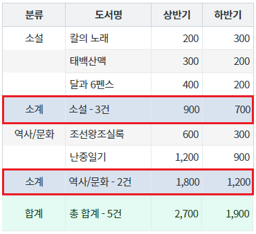
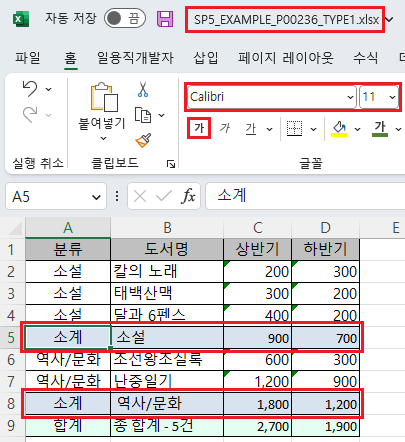
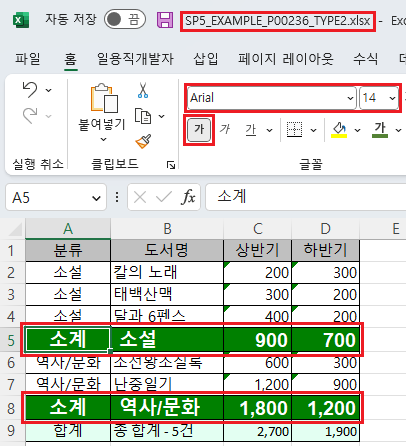

GridView의 엑셀 다운로드(함수 'advancedExcelDownload') 옵션 중 서브토탈의 스타일을 적용할 수 있는 옵션 설정의 예제입니다. 서브토탈 스타일을 지정할 수 있는 옵션은 아래와 같습니다. - subTotalColor : <String:N> [default: #CCFFCC] Excel 파일에서 그리드의 subtotal분의 색 - subTotalFontName : <String:N> [default: 없음] Excel 파일에서 그리드의 subtotal의 font name - subTotalFontSize : <String:N> Excel 파일에서 그리드의 subtotal의 font size - subTotalFontColor : <String:N> [default: 없음] Excel 파일에서 그리드의 subtotal의 font 색 - subTotalFontBold : <String:N> [default: 없음] Excel 파일에서 그리드의 subTotal의 Bold 적용 유무
이 옵션은 'useStyle'을 'false'로 지정해야 동작합니다.
엑셀 다운로드 - 기본 동작
엑셀 다운로드 - 서브토탈의 스타일 적용
GridView에 서브토탈(소계)이 적용되어 있습니다.
[브라우저(Chrome) 실행 예시]

엑셀 파일 "SP5_EXAMPLE_P00236_TYPE1.xlsx"이 다운로드 됩니다.
다운로드 된 엑셀 파일 'SP5_EXAMPLE_P00236_TYPE1.xlsx'을 실행합니다.
서브토탈 영역의 스타일을 확인합니다.
(배경색, 글자체, 글자 크기, 글자색, 글자 굵게 적용 여부)
배경색을 제외한 나머지 설정은 엑셀에 설정된 기본 값으로 적용됩니다.
[다운로드된 엑셀(2021) 파일 예시]

GridView에 서브토탈(소계)이 적용되어 있습니다.
[브라우저(Chrome) 실행 예시]
엑셀 파일 "SP5_EXAMPLE_P00236_TYPE2.xlsx"이 다운로드 됩니다.
다운로드 된 엑셀 파일 'SP5_EXAMPLE_P00236_TYPE2.xlsx'을 실행합니다.
서브토탈 영역의 스타일을 확인합니다.
- 배경색 : "green"
- 글자체 : "Arial"
- 글자 크기 : "14"
- 글자색 : "white"
- 글자 굵게 적용 : "true"
[다운로드된 엑셀(2021) 파일 예시]

[소스 코드 예시]
//예제 파일의 스크립트 "scwin.btn_ex2_onclick"를 참고하세요. var jsnOptions; jsnOptions = { fileName: "SP5_EXAMPLE_P00236_TYPE2.xlsx", //엑셀의 파일명 useSubTotal : "true", //필수 지정 - subTotal 표시 useStyle : "false", //필수 지정 subTotalColor : "green", //서브토탈의 배경색 (Green) subTotalFontName : "Arial", //서브토탈의 글자체 subTotalFontSize : "14", //서브토탈의 글자 크기 subTotalFontColor : "white", //서브토탈의 글자색 (White) subTotalFontBold : "true" //서브토탈의 글자 굵게 적용 }; //options.useSubTotal : <String:N> [default: false, true] 다운로드시 SubTotal을 출력 할지 여부. //options.useStyle <String:N> [default: false] 다운로드시 css를 제외한, style을 excel에도 적용할 지 여부 (배경색,폰트) //options.subTotalColor : <String:N> [default: #CCFFCC] Excel 파일에서 그리드의 subtotal분의 색 //options.subTotalFontName : <String:N> [default: 없음] Excel 파일에서 그리드의 subtotal의 font name //options.subTotalFontSize : <String:N> Excel 파일에서 그리드의 subtotal의 font size //options.subTotalFontColor : <String:N> [default: 없음] Excel 파일에서 그리드의 subtotal의 font 색 //options.subTotalFontBold : <String:N> [default: 없음] Excel 파일에서 그리드의 subTotal의 Bold 적용 유무 //GridView "grd_exam1"의 엑셀 다운로드 실행 grd_exam1.advancedExcelDownload(jsnOptions);
options.subTotalColor
options.subTotalFontName
options.subTotalFontSize
options.subTotalFontColor
options.subTotalFontBold
[웹스퀘어5 SP5 개발 가이드] GridView
링크 : https://docs1.inswave.com/sp5_user_guide/bc10c1b82c9a2a0b#e1c4658baf7e726f
[웹스퀘어5 SP5 개발 가이드] GridView → Excel 다운로드
링크 : https://docs1.inswave.com/sp5_user_guide/bc10c1b82c9a2a0b#9fb910628c27d550
[웹스퀘어5 SP5 개발 가이드] Excel 파일 스타일 설정
링크 : https://docs1.inswave.com/sp5_user_guide/bc10c1b82c9a2a0b#7a3bda36f7d0b2e6